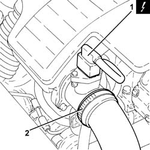
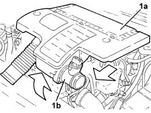
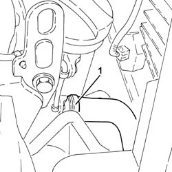
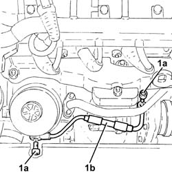
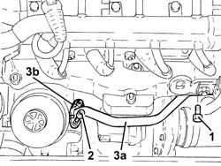
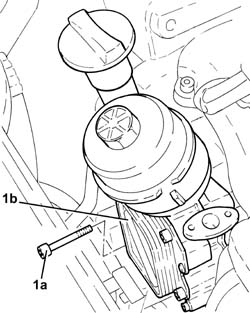
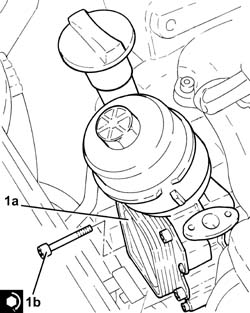
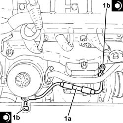

1084C12 Engine oil HEAT EXCHANGER, complete with engine oil filler and filter - R.R.
- Path
- Procedures > 10 ENGINE UNIT > 1084 ENGINE LUBRICATION SYSTEM > 1084C engine oil cooling circuit > 1084C12 Engine oil HEAT EXCHANGER, complete with engine oil filler and filter - R.R.
- Kind
- repair procedure (removal / refitting; the operation number is the code)
- Applies to
- engines: 1.3 JTD 16v; all production periods
- Interactive page
- https://sloeber94.github.io/elrnDB-fPnd/en/#/2752635
Applies to: engines: 1.3 JTD 16v; all production periods
 Removing
Removing
 Refitting
RefittingDisconnect the battery negative terminal.
1. Disconnect the electrical connection from the air flow meter.
 | Name | Connector |
|---|---|---|
1 | Air flow meter | K41 |
2. Loosen the band and disconnect the the turbocharger air inlet sleeve from the rigid pipe, air flow meter side.

Applies to: engines: 1.3 JTD 16v; all production periods
1. Remove the air filter (1a) complete with air flow meter (1b) by releasing from the underlying pins and then from the rear fastenings.

Applies to: engines: 1.3 JTD 16v; all production periods
1. Loosen the band and disconnect the lower radiator coolant outlet hose from the radiator, engine oil heat exchanger end.

Applies to: engines: 1.3 JTD 16v; all production periods
1. Undo the connectors (1a) and remove the engine oil supply pipe to the turbocharger (1b).

Applies to: engines: 1.3 JTD 16v; all production periods
1. Undo the bolts fixing the coolant supply pipe to the engine oil heat exchanger, crankcase side.
2. Undo the bolts fixing the coolant supply pipe to the engine oil heat exchanger, heat exchanger side.
3. Move aside the pipe carrying coolant to the engine oil heat exchanger (3a) complete with seal (3b).

Applies to: engines: 1.3 JTD 16v; all production periods
1. Undo the bolts (1a) and remove the engine oil heat exchanger complete with filter and engine oil filler (1b) and gasket.

Applies to: engines: 1.3 JTD 16v; all production periods
Refitting
Removing1. Refit in its seating the engine oil heat exchanger complete with filter and engine oil filler (1a) and gasket, and secure with the bolts (1b) to the specified torque.
 | Fastening | Component | Ø | Value (daNm) |
|---|---|---|---|---|
1b | Bolt | ENGINE OIL HEAT EXCHANGER | - | (Engine crankcase side) 0.8 ÷ 1.0 |

Applies to: engines: 1.3 JTD 16v; all production periods
Fit the engine oil heat exchanger coolant inlet pipe, complete with gasket, in position.
Undo the bolts fixing the coolant supply pipe to the engine oil heat exchanger, heat exchanger side, to the specified torque.
Tighten the coolant inlet hose bolt to the engine oil heat exchanger, crankcase side.
1. Fit the turbocharger engine oil supply pipe (1a) in place and secure it tightenining the connectors (1b) to the recommended torque.
| Fastening | Component | Ø | Value (daNm) |
|---|---|---|---|---|
1b | Connector | OIL DELIVERY PIPE TO TURBO | M10 | (Turbocharger side/engine oil heat exchanger) 1.1 ÷ 1.3 |

Applies to: engines: 1.3 JTD 16v; all production periods
Refit the lower coolant outlet sleeve from the radiator, engine oil heat exchanger end, and tighten the band.
Fit the air filter complete with air flow meter in place.
Connect the air intake sleeve to the turbocharger, air flow meter side, and tighten the band.
Connect the electrical connection to the air flow meter.
| Name | Connector |
|---|---|---|
- | Air flow meter | K41 |
Connect the battery negative terminal.